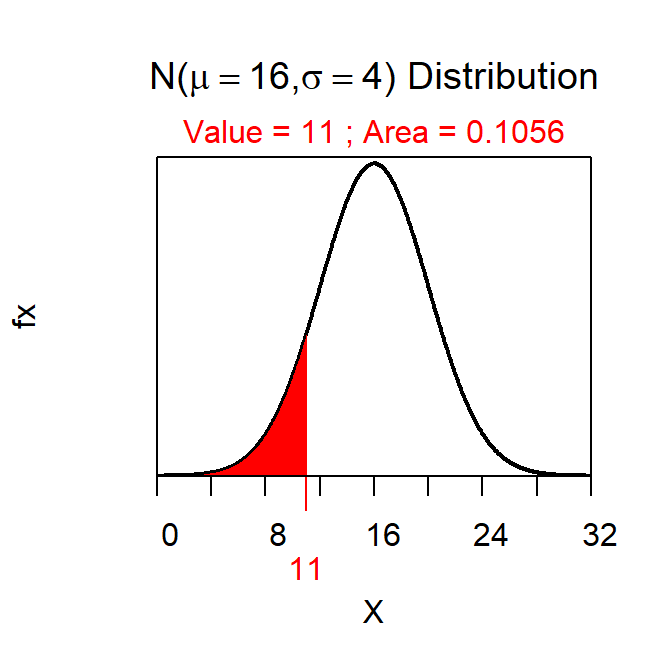

Load NCStats Package
library(NCStats)Forward, Less-Than
( distrib(22,mean=16,sd=4) )## [1] 0.9331928Forward, Greater-Than
( distrib(15,mean=16,sd=4,lower.tail=FALSE) )## [1] 0.5987063Forward, Between
( ab <- distrib(26,mean=16,sd=4) )
## [1] 0.9937903( a <- distrib(11,mean=16,sd=4) )
## [1] 0.1056498ab-a## [1] 0.8881406Reverse, Less-Than}
( distrib(0.1,mean=16,sd=4,type="q") )## [1] 10.87379Reverse, Greater Than
( distrib(0.20,mean=16,sd=4,type="q",lower.tail=FALSE) )## [1] 19.36648Reverse, Between
( distrib(0.25,mean=16,sd=4,type="q") )## [1] 13.30204( distrib(0.25,mean=16,sd=4,type="q",lower.tail=FALSE) )## [1] 18.69796